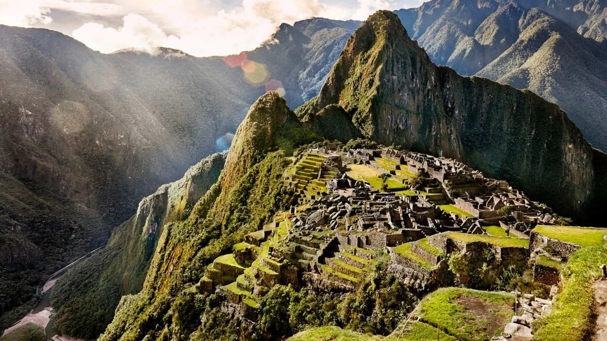
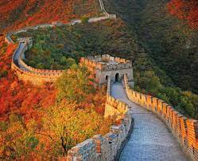

La quebrada de Picchu, ubicada a medio camino entre los Andes y la floresta amazónica, fue una región colonizada por poblaciones andinas, no selváticas, provenientes de las regiones de Vilcabamba y del Valle Sagrado, en Cuzco, en busca de una expansión de sus fronteras agrarias. Las evidencias arqueológicas indican que la agricultura se practicaba en la región desde al menos el 760 a. C.
La Gran Muralla China es una antigua fortificación china, construida y reconstruida entre el siglo v a. C. y el siglo xvi para proteger la frontera norte del Imperio chino durante las sucesivas dinastías imperiales de los ataques de los nómadas xiongnu de Mongolia y Manchuria.
